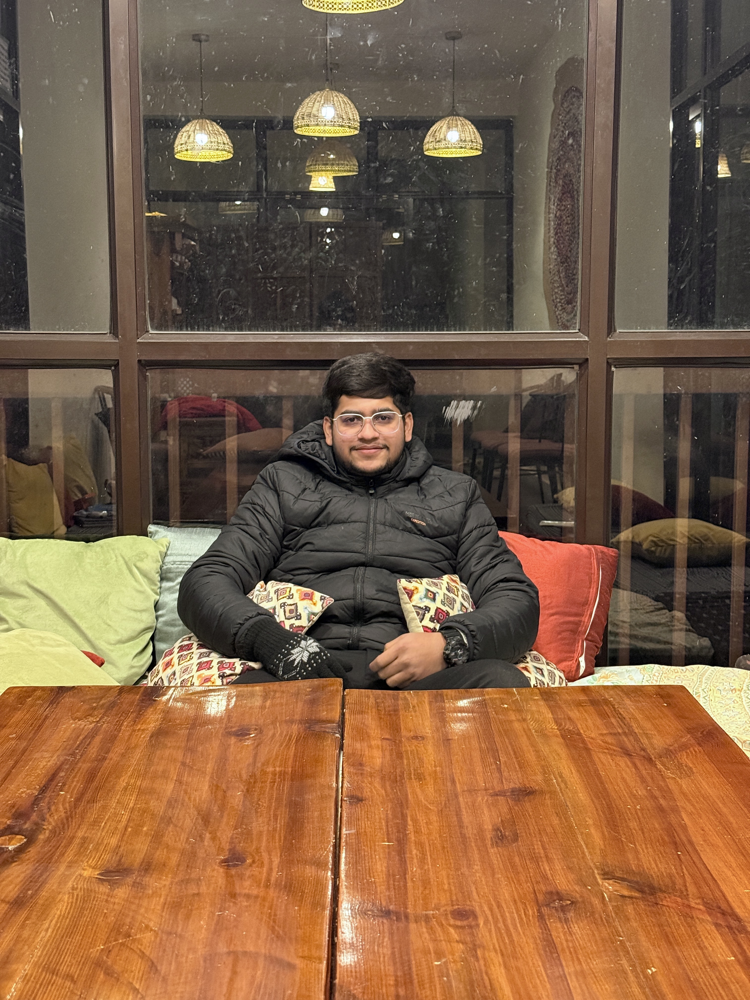

Google Student Ambassador — Google
– Present | India
- Represent Google on campus and help build awareness of its tools, programmes and developer resources.
- Engage fellow students through events, sessions and outreach activities.
Your Homely FPV Racer
Tech Enthusiast · FPV Racing Drone Pilot · MBBS & BBA (DBE) Student

Hi! I am Abhay Pratap Singh — a second-year MBBS student who is also pursuing a BBA (DBE) from IIM Bangalore. I am a tech enthusiast and an FPV racing drone pilot who loves building, tuning and flying things. I enjoy blending my interest in medicine, business and technology, and I am currently learning web development. My goal is to keep building useful projects and to grow at the intersection of healthcare, business and tech.
A snapshot of what I know and how confident I am with each:
| Skill | Category | Level |
|---|---|---|
| HTML | Web Development | Intermediate |
| FPV Drone Building & Piloting | Technical / Hobby | Advanced |
| RC Electronics & Tinkering | Technical / Hobby | Intermediate |
| Badminton | Sport | Mid to Advanced |
| Communication & Teamwork | Soft Skill | Advanced |
– Present | India
| Remote / Paris, France
SKS Hospital Medical College and Research Centre
Second year · Expected graduation:
Indian Institute of Management (IIM) Bangalore
Currently pursuing · Expected:
St. Peter's Senior Secondary School, Bharatpur
Completed:
A few things I have built and worked on.
A single-page resume website built from scratch using semantic HTML to showcase my background, skills and projects — this very site!
Technologies used: HTML, semantic tags, tables
Built, configured and piloted a first-person-view (FPV) racing drone — from assembling the frame and electronics to tuning the flight controller for fast, responsive racing.
Technologies / tools used: RC electronics, flight controller & ESCs, soldering, drone configuration software
Worked with Centolla (Paris, France) on research exploring how Artificial Intelligence can help improve child safety.
Areas involved: AI/ML concepts, research & analysis
They don't call me "Your Homely FPV Racer" for nothing — give me a drone and an open track and I'm right at home!